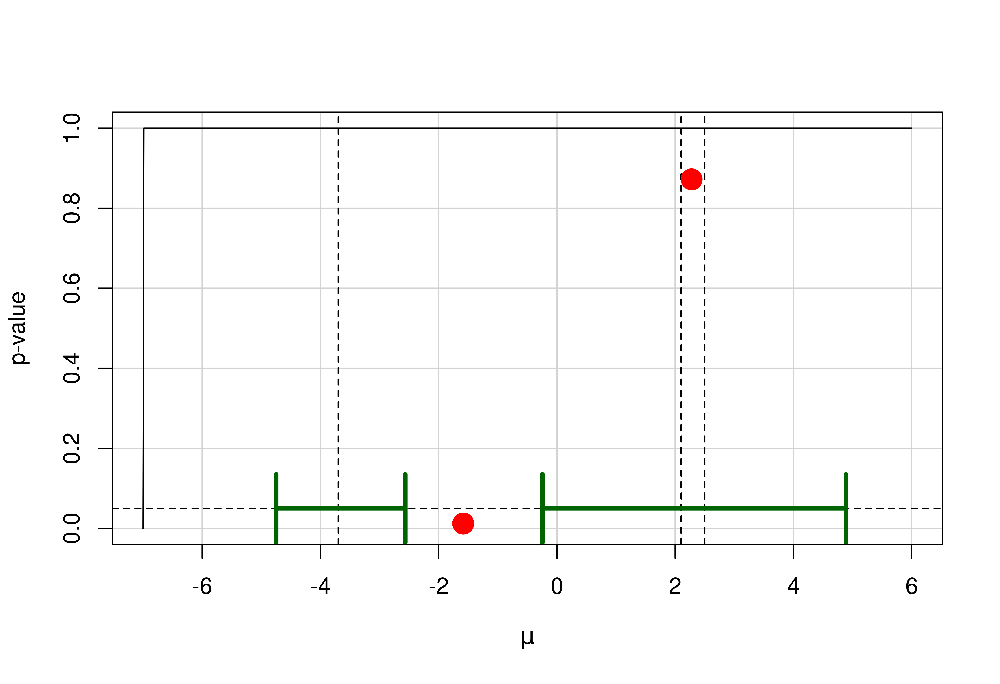

p-values and confidence intervals from the harmonic mean chi-squared test.
hMeanChiSq(
z,
w = rep(1, length(z)),
alternative = c("greater", "less", "two.sided", "none"),
bound = FALSE
)
hMeanChiSqMu(
thetahat,
se,
w = rep(1, length(thetahat)),
mu = 0,
alternative = c("greater", "less", "two.sided", "none"),
bound = FALSE
)
hMeanChiSqCI(
thetahat,
se,
w = rep(1, length(thetahat)),
alternative = c("two.sided", "greater", "less", "none"),
conf.level = 0.95
)Numeric vector of z-values.
Numeric vector of weights.
Either "greater" (default), "less", "two.sided", or "none". Specifies the alternative to be considered in the computation of the p-value.
If FALSE (default), p-values that cannot be computed are reported as NaN.
If TRUE, they are reported as "> bound".
Numeric vector of parameter estimates.
Numeric vector of standard errors.
The null hypothesis value. Defaults to 0.
Numeric vector specifying the conf.level of the confidence interval. Defaults to 0.95. summarize the gamma values, i.e., the local minima of the p-value function between the thetahats. Defaults is a vector of 1s.
hMeanChiSq: returns the p-values from the harmonic mean chi-squared test
based on the study-specific z-values.
hMeanChiSqMu: returns the p-value from the harmonic mean chi-squared test
based on study-specific estimates and standard errors.
hMeanChiSqCI: returns a list containing confidence interval(s)
obtained by inverting the harmonic mean chi-squared test based on study-specific
estimates and standard errors. The list contains:
Confidence interval(s).
If the alternative is "none", the list also contains:
Local minima of the p-value function between the thetahats.
Held, L. (2020). The harmonic mean chi-squared test to substantiate scientific findings. Journal of the Royal Statistical Society: Series C (Applied Statistics), 69, 697-708. doi:10.1111/rssc.12410
## Example from Fisher (1999) as discussed in Held (2020)
pvalues <- c(0.0245, 0.1305, 0.00025, 0.2575, 0.128)
lower <- c(0.04, 0.21, 0.12, 0.07, 0.41)
upper <- c(1.14, 1.54, 0.60, 3.75, 1.27)
se <- ci2se(lower = lower, upper = upper, ratio = TRUE)
thetahat <- ci2estimate(lower = lower, upper = upper, ratio = TRUE)
## hMeanChiSq() --------
hMeanChiSq(z = p2z(p = pvalues, alternative = "less"),
alternative = "less")
#> [1] 0.0004840125
hMeanChiSq(z = p2z(p = pvalues, alternative = "less"),
alternative = "two.sided")
#> [1] 0.000968025
hMeanChiSq(z = p2z(p = pvalues, alternative = "less"),
alternative = "none")
#> [1] 0.0154884
hMeanChiSq(z = p2z(p = pvalues, alternative = "less"),
w = 1 / se^2, alternative = "less")
#> [1] 0.0003410182
hMeanChiSq(z = p2z(p = pvalues, alternative = "less"),
w = 1 / se^2, alternative = "two.sided")
#> [1] 0.0006820365
hMeanChiSq(z = p2z(p = pvalues, alternative = "less"),
w = 1 / se^2, alternative = "none")
#> [1] 0.01091258
## hMeanChiSqMu() --------
hMeanChiSqMu(thetahat = thetahat, se = se, alternative = "two.sided")
#> [1] 0.0009954952
hMeanChiSqMu(thetahat = thetahat, se = se, w = 1 / se^2,
alternative = "two.sided")
#> [1] 0.000723444
hMeanChiSqMu(thetahat = thetahat, se = se, alternative = "two.sided",
mu = -0.1)
#> [1] 0.003089007
## hMeanChiSqCI() --------
## two-sided
CI1 <- hMeanChiSqCI(thetahat = thetahat, se = se, w = 1 / se^2,
alternative = "two.sided")
CI2 <- hMeanChiSqCI(thetahat = thetahat, se = se, w = 1 / se^2,
alternative = "two.sided", conf.level = 0.99875)
## one-sided
CI1b <- hMeanChiSqCI(thetahat = thetahat, se = se, w = 1 / se^2,
alternative = "less", conf.level = 0.975)
CI2b <- hMeanChiSqCI(thetahat = thetahat, se = se, w = 1 / se^2,
alternative = "less", conf.level = 1 - 0.025^2)
## confidence intervals on hazard ratio scale
print(exp(CI1$CI), digits = 2)
#> lower upper
#> [1,] 0.21 0.74
print(exp(CI2$CI), digits = 2)
#> lower upper
#> [1,] 0.16 0.97
print(exp(CI1b$CI), digits = 2)
#> lower upper
#> [1,] 0 0.74
print(exp(CI2b$CI), digits = 2)
#> lower upper
#> [1,] 0 0.97
## example with confidence region consisting of disjunct intervals
thetahat2 <- c(-3.7, 2.1, 2.5)
se2 <- c(1.5, 2.2, 3.1)
conf.level <- 0.95; alpha <- 1 - conf.level
muSeq <- seq(-7, 6, length.out = 1000)
pValueSeq <- hMeanChiSqMu(thetahat = thetahat2, se = se2,
alternative = "none", mu = muSeq)
(hm <- hMeanChiSqCI(thetahat = thetahat2, se = se2, alternative = "none"))
#> $CI
#> lower upper
#> [1,] -4.7459650 -2.564739
#> [2,] -0.2457423 4.885610
#>
#> $gamma
#> minimum pvalue_fun/gamma
#> [1,] -1.584762 0.01227696
#> [2,] 2.277232 0.87220092
#>
plot(x = muSeq, y = pValueSeq, type = "l", panel.first = grid(lty = 1),
xlab = expression(mu), ylab = "p-value")
abline(v = thetahat2, h = alpha, lty = 2)
arrows(x0 = hm$CI[, 1], x1 = hm$CI[, 2], y0 = alpha,
y1 = alpha, col = "darkgreen", lwd = 3, angle = 90, code = 3)
points(hm$gamma, col = "red", pch = 19, cex = 2)
